SICO / CONNECTED WORKSPACE
连接之后：主界面与全部工作区页面。
这是日常使用 SiCo 的主界面。左侧选会话和任务，中间对话，右侧审阅、汇报、数据、进程和终端，底部输入新任务。本页覆盖每一个核心子页面及可见按钮。

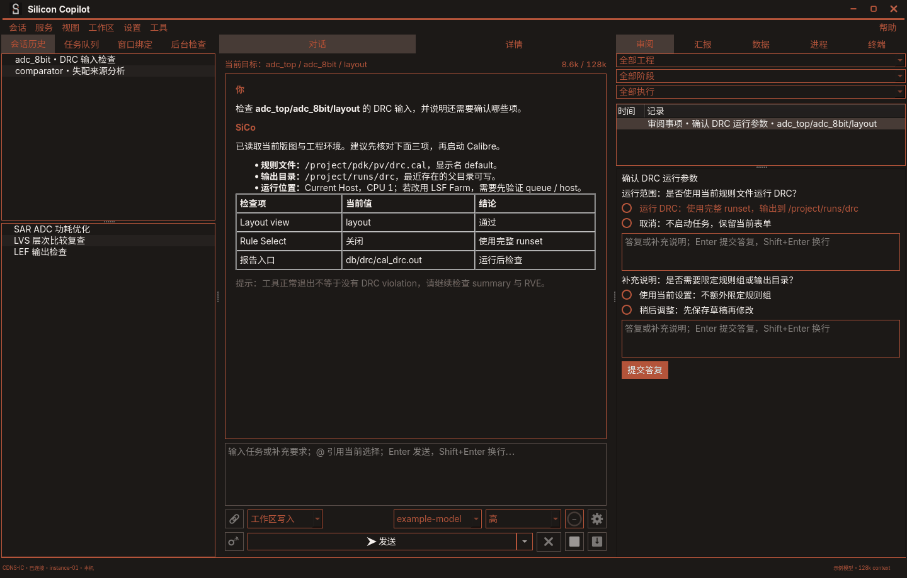
adc_top/adc_8bit/layout；会话、任务、审阅、汇报、进程和终端均为演示数据。点击图片查看原始尺寸怎样确认已经连接
| 位置 | 连接后的表现 | 说明 |
|---|---|---|
| 对话顶部目标行 | 显示当前目标，例如 adc_top / adc_8bit / layout | 目标来自当前绑定的 Virtuoso，不是手填文本；提交前核对。 |
| 底部状态行 | 显示 CDNS-IC、实例、主机与当前模型 | 状态文字为连接和运行的最终读回；不要只看表单默认值。 |
| 左侧会话行 | 显示会话名称、状态圆点和活动状态 | 当前会话与历史记录分区显示；历史行在未继续前是只读的。 |
| 窗口绑定页 | 列出已绑定目标及“当前 / 默认”状态 | 没有绑定目标时先连接或选择 CDNS-IC，再提交设计任务。 |
| 发送按钮 | 取得写控制权后可用 | 另一个窗口持有控制权时，本窗口只读并显示原因。 |
| 服务菜单 | 出现重试、停止等入口 | 普通关闭窗口是挂起；结束服务才停止后台会话和作业。 |
左侧 / 导航会话历史、任务队列、窗口绑定、后台检查。
中间 / 工作区“对话”与“详情”两个中心页面。
右侧 / 中心审阅、汇报、数据、进程、终端五个工作台页面。
底部 / 输入附件、执行权限、模型、推理强度、目标、回合设置、发送与停止。
左侧导航的四个子页面
左侧面板可收成窄条；双击面板分割条或点击窄条上的三角可以展开。页签下方的行支持单击选中、双击/回车浏览，以及右键菜单操作。

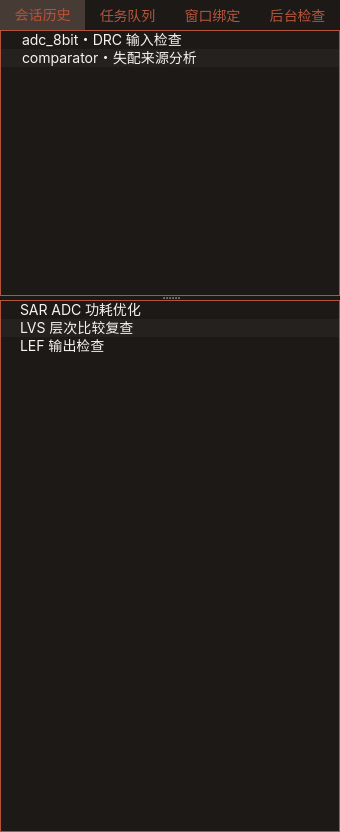

会话历史
| 控件/操作 | 详细说明 | 使用要点 |
|---|---|---|
| 会话历史页签 | 同时显示本窗口已打开的会话和未打开的历史会话。 | 单击只选中；双击或回车才浏览；浏览历史不会改变当前任务的写控制权。 |
| 上方“当前会话”树 | 列出已打开会话及其活动/空闲/待核对状态。 | 状态圆点颜色与任务活动相关；切换会话前确认是否有运行中任务。 |
| 下方“历史记录”树 | 列出未在当前窗口打开的会话记录。 | 双击打开会建立只读浏览；需要继续会话时使用“继续”或相应入口。 |
| 行右键菜单 | 根据状态提供继续、重命名、删除、新建标签、移动到标签、删除标签等操作。 | 运行中的活动会话不能直接重命名或删除；先停止任务。 |
| 返回当前会话 | 会话菜单或快捷键返回正在执行的会话。 | 在历史浏览中只读查看后使用，不会重新提交任务。 |
| 标签分组 | 可新建标签并把会话拖入标签；标签名和顺序保存在工作区布局中。 | 标签只组织历史，不改变会话内容或项目绑定。 |
任务队列
| 控件/操作 | 详细说明 | 使用要点 |
|---|---|---|
| 任务队列页签 | 展示当前会话的任务树或扁平任务行，包含状态和来源设计。 | 忙碌时发送的新输入进入待办队列，不会覆盖当前任务。 |
| 任务行 | 显示任务标题、状态和来源设计；行可展开查看阶段/执行。 | 单击/回车打开详情；不要把“已完成”当作验收通过，仍要看结果与审阅。 |
| 右键菜单 | 可取消排队请求、筛选任务…、清除筛选。 | 只有仍在队列中的请求可直接取消；已经开始的任务用输入区的停止按钮。 |
| 筛选 | 按任务文本过滤当前显示，不改变会话状态。 | 清除筛选后核对完整队列。 |

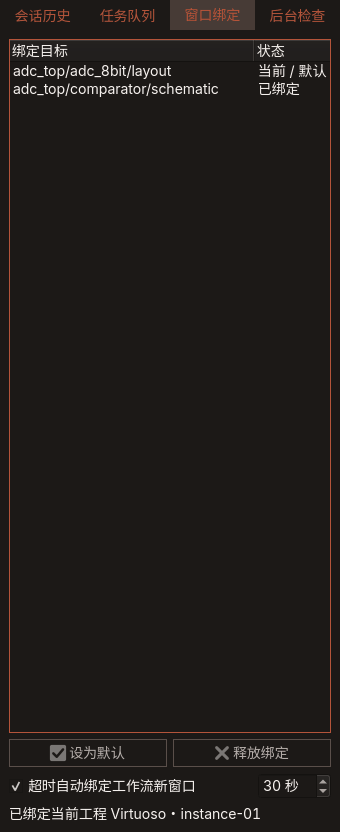

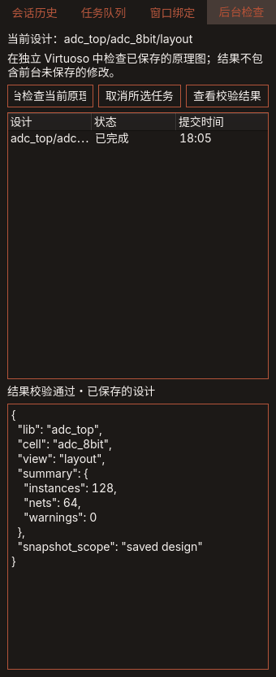
窗口绑定
| 控件/按钮 | 详细说明 | 使用要点 |
|---|---|---|
| 绑定目标树 | 列出当前会话可用的 Virtuoso 目标、资源预留和状态。 | “当前 / 默认”是任务提交时使用的目标；其它目标是可选绑定。 |
| 设为默认 | 把选中目标设为当前默认并提交绑定决定。 | 切换默认目标会改变后续任务上下文；正在运行的任务不一定自动迁移。 |
| 释放绑定 | 释放选中目标或资源预留。 | 不会关闭 Virtuoso，只解除 SiCo 的使用关系。 |
| 操作回执下拉 + 核对按钮 | 列出待核对/未知/执行中的请求；按钮核对原请求回执。 | 结果未知时先核对，不要重放写入或换目标重试。 |
| 超时自动绑定工作流新窗口 | 允许在指定秒数后自动绑定新出现的工作流窗口。 | 只在站点工作流明确需要时开启；秒数决定等待窗口。 |
| 绑定提案区 | 显示“加入绑定并切换默认目标？”及剩余时间。 | 这是需要答复的绑定决定；不要忽略倒计时。 |
后台检查
| 控件/按钮 | 详细说明 | 使用要点 |
|---|---|---|
| 当前设计行 | 显示本次检查使用的 library / cell / view。 | 只检查已保存设计；前台未保存修改不在结果中。 |
| 后台检查当前原理图 | 提交独立 Virtuoso 的只读检查任务。 | 需要原理图 view 和可用的后台资源；不会占用前台对话。 |
| 取消所选任务 | 取消选中的排队或运行中后台任务。 | 只对可控制的任务启用；已结束任务保持记录。 |
| 查看校验结果 | 读取已完成任务并显示经校验的 JSON 结果。 | 结果失败或校验不一致时不会打开为已保存设计结论。 |
| 任务表 | 列出设计、状态和提交时间。 | 状态包括已接收、排队、检查中、已完成、超时、结果未确认等。 |
| 结果区 | 显示实例、网络、警告等校验数据。 | 读取结果前确认当前选择仍是目标任务。 |
右侧工作台的五个子页面
审阅、汇报、数据、进程、终端共享顶部的工程任务/阶段/执行筛选行。筛选只影响显示和查询，不改变已有会话或设计。

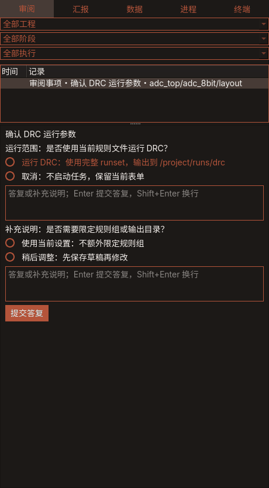

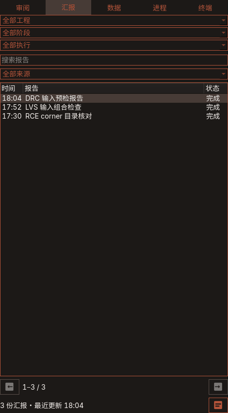
审阅
| 控件/按钮 | 详细说明 | 使用要点 |
|---|---|---|
| 审阅记录列表 | 按时间显示审阅事项、来源设计和状态；待答复事项使用强调色。 | 逐条答复；不要只看对话中的摘要。 |
| 详情区 | 显示工具请求、命令、依据、建议和问题描述。 | 关注“命令/参数/目标”和影响范围，而不是只选推荐项。 |
| 问题选项与补充输入 | 每个问题有单选选项和文本框；Enter 提交，Shift+Enter 换行。 | 推荐项是宿主建议，不一定是你要的答案；必要时填写补充说明。 |
| 提交答复 | 把选择/文本提交给等待中的任务。 | 提交后回执可能延迟；不要重复提交同一请求。 |
| 只读历史审阅 | 浏览历史会话时显示只读标记，答复表单不提交。 | 需要答复时先“继续”回到当前会话。 |
汇报
| 控件/按钮 | 详细说明 | 使用要点 |
|---|---|---|
| 搜索报告 | 按标题/内容关键字过滤当前汇报页。 | 清空搜索后重新核对总数。 |
| 全部来源 | 按数据来源过滤汇报记录。 | 来源筛选与搜索可以叠加。 |
| 报告表 | 列时间、报告标题和状态；点击表头排序。 | 状态不是质量结论，打开详情确认实际产物。 |
| 上一页 / 下一页 | 分页加载汇报记录；显示当前范围和总数。 | 页码切换会重新查询，不要连续快速点击。 |
| 打开详情按钮 | 打开选中汇报的完整内容。 | 在“详情”页查看字段、Markdown、图片和输出。 |

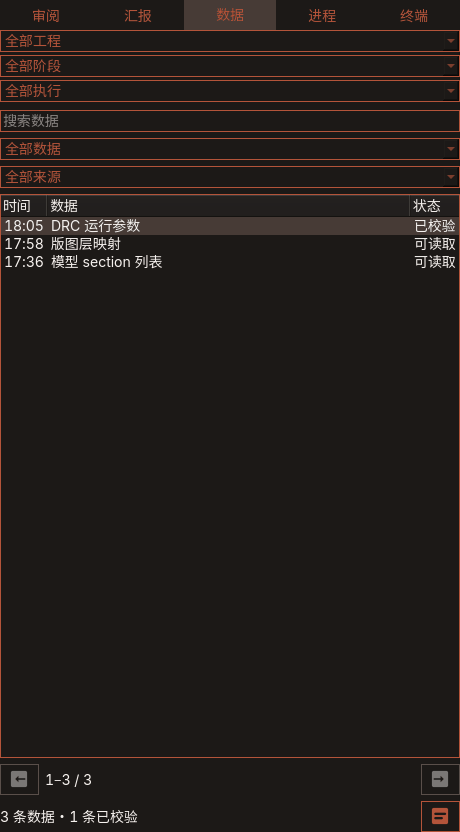

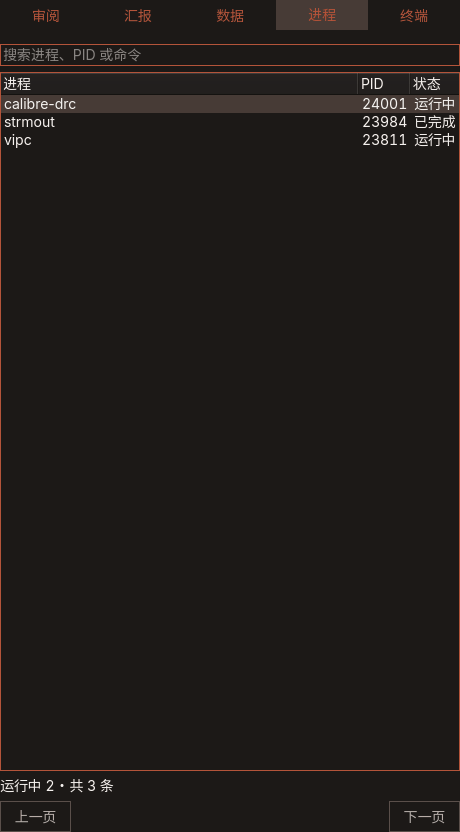
数据
| 控件/按钮 | 详细说明 | 使用要点 |
|---|---|---|
| 搜索数据 | 按名称/内容关键字过滤数据条目。 | 清空搜索后再判断数据是否缺失。 |
| 类别下拉 | 全部数据或具体数据类别。 | 类别来自当前数据契约，不是文件扩展名。 |
| 全部来源 | 按工具/服务来源过滤。 | 结合类别和搜索缩小范围。 |
| 数据表 | 显示时间、数据标题和状态；可排序。 | 选中后打开详情；可校验状态会明确显示。 |
| 分页与打开详情 | 翻页加载记录，用打开按钮查看完整字段。 | 数据读取失败时保留原列表，不自动把失败当空结果。 |
进程
| 控件/按钮 | 详细说明 | 使用要点 |
|---|---|---|
| 搜索进程 | 按名称/命令过滤 SiCo 启动的进程。 | 只读列表，不直接结束系统进程。 |
| 进程表 | 显示名称、PID（或“—”）、状态标签。 | PID 缺失表示无法确认系统身份，不代表进程不存在。 |
| 上一页 / 下一页 | 分页加载最多 200 条记录。 | 摘要显示运行中数量和总数。 |
| 打开进程详情 | 进入“详情”查看命令、运行时长、日志和相关产物。 | 排查前先记录进程名称与 PID。 |

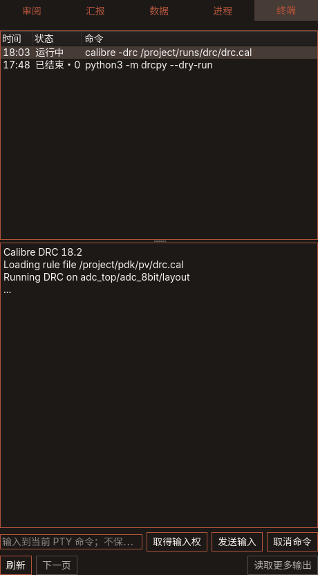
终端
| 控件/按钮 | 详细说明 | 使用要点 |
|---|---|---|
| 命令列表 | 显示时间、状态和命令；选中后读取已记录输出。 | 命令记录只保存 owner 和字节数，不保存输入明文。 |
| 输出区 | 只读显示 PTY/日志输出，处理回车、退格和控制字符。 | 输出超过上限时分页读取，不自动截断成成功结论。 |
| 刷新 / 下一页 / 读取更多输出 | 刷新命令列表、翻页或继续读取当前输出。 | 长任务运行中优先看最新输出和状态，不重复启动命令。 |
| 输入 | 向当前命令 stdin 发送文本。 | 只有在取得输入权后才可发送；不要输入密码或一次性凭据。 |
| 取得输入权 | 请求成为当前终端命令的输入 owner。 | 其他窗口可能持有输入权；失败时等待或核对 owner。 |
| 发送输入 | 提交输入行到当前命令。 | 发送后观察输出确认命令实际接收。 |
| 取消命令 | 请求取消当前终端命令。 | 取消是请求，不保证瞬时结束；以状态和输出为准。 |
中间的“详情”页面

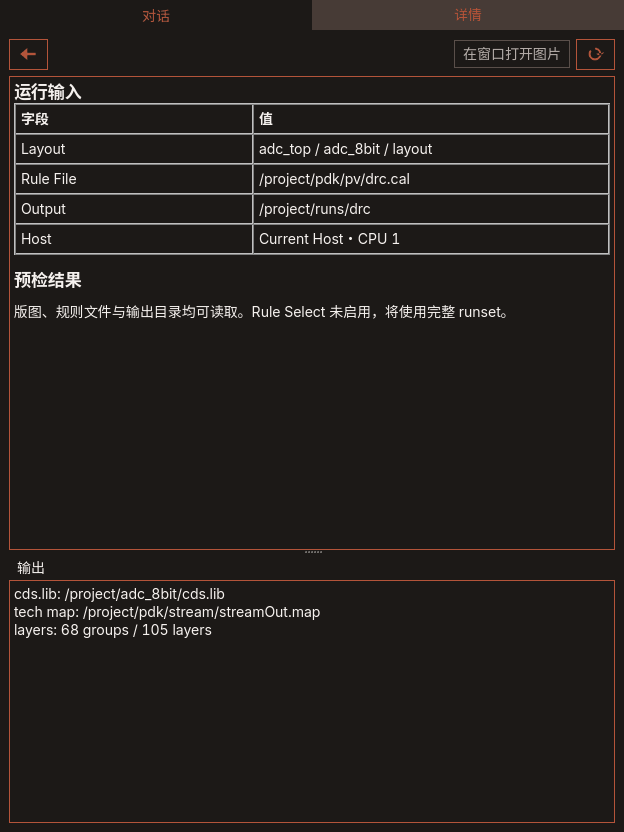
| 控件/按钮 | 详细说明 | 使用要点 |
|---|---|---|
| 返回按钮 | 返回打开详情前的对话或列表页面。 | 返回不会关闭当前会话或删除详情。 |
| 标题与图片按钮 | 显示对象标题；有图片时打开图片库。 | 图片是产物证据，仍需核对来源与版本。 |
| 刷新按钮 | 重新核验来源数据。 | 不会盲目重放写入操作；只刷新读取。 |
| 分页审阅栏 | 页面下拉、搜索、上一页/下一页和状态；仅多页对象显示。 | 审阅页选择与来源文件绑定，切换前先确认当前页。 |
| 文档区 | 显示字段表、Markdown、代码、图片或结构化结果。 | 表格/命令可能包含完整路径；复制前确认目标。 |
| 输出区 | 只读终端/工具输出；无输出时整块隐藏。 | 输出是证据，不是自动质量判定。 |
| 文档链接 | 链接可打开相关汇报、数据、审阅、图片或工具回执。 | 单 click 打开对象；不要把它当作外部网页链接。 |
设置页面
设置位于菜单栏“设置”。外观立即应用；智能体设置和 Codex 特性影响新会话或当前会话的后续运行时，已有任务不会自动改变。

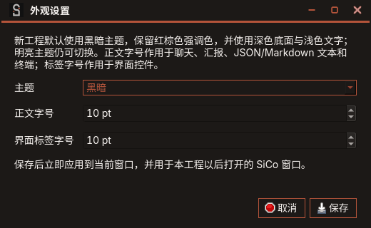

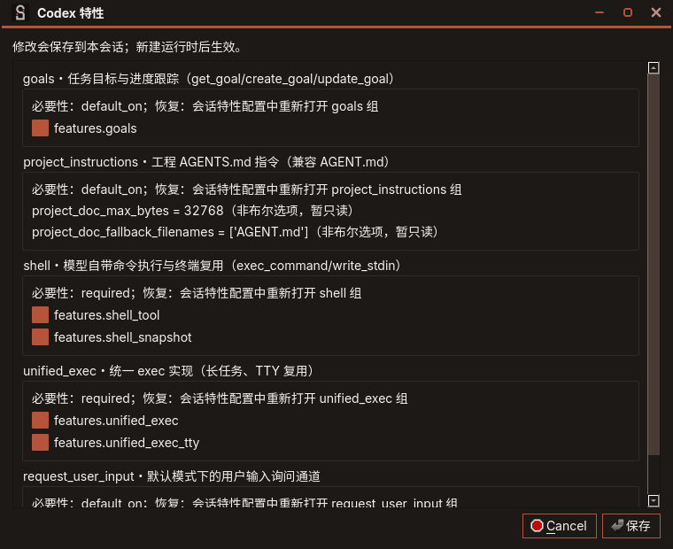
外观设置
| 控件 | 详细说明 | 使用要点 |
|---|---|---|
| 主题 | 选择明亮/深色主题及家族配色。 | 只影响当前工程窗口的显示；保存后立即应用。 |
| 正文字号 | 作用于聊天、汇报、JSON/Markdown 和终端文字。 | 过大会减少可视行数；保存前可预览。 |
| 界面标签字号 | 作用于控件标签和按钮文字。 | 与正文字号独立；窄窗口下建议适中。 |
| 保存 / 取消 | 保存并应用，或放弃本次修改。 | 保存写入当前工程设置文件。 |
Codex 特性
| 控件 | 详细说明 | 使用要点 |
|---|---|---|
| 功能组列表 | 每组显示用途、必要性、恢复方式和可配置布尔选项。 | 不要关闭理解不足的组；先看“恢复”说明。 |
| 布尔开关 | 覆盖该组的内建特性开关。 | 保存后新运行时生效；已绑定运行时的会话请新建会话。 |
| 只读选项 | 非布尔值（如字节上限、文件名列表）显示为只读。 | 只读值需要工程/站点配置，不在本对话框修改。 |
| 保存 / 取消 | 保存覆盖项或放弃。 | 当前会话已绑定运行时，保存按钮会保持禁用并说明原因。 |
智能体设置
智能体设置按“知识源 / MCP 与插件 / 技能 / 数据源”四类管理工程默认资源。顶部可切换工程默认、当前来源默认和当前会话只读视图。

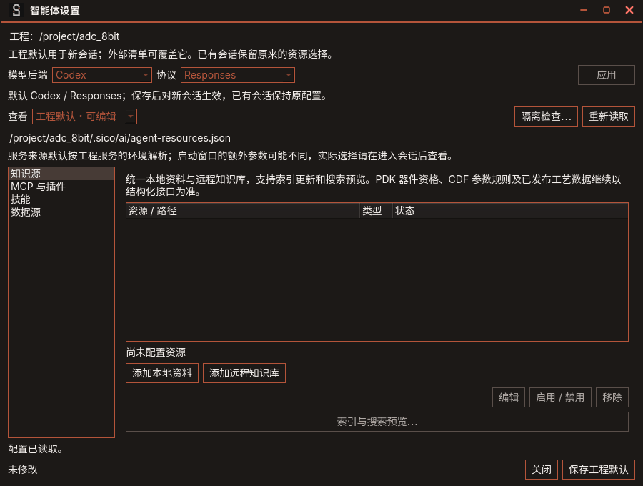

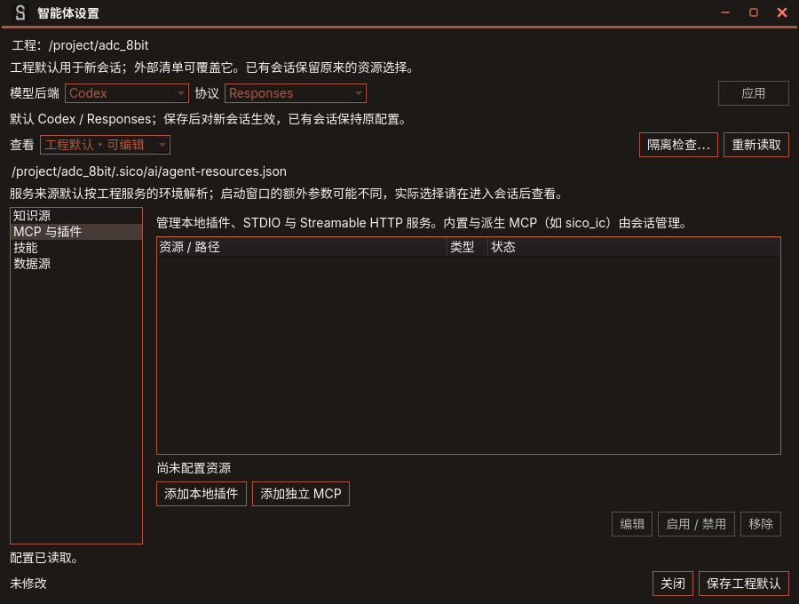

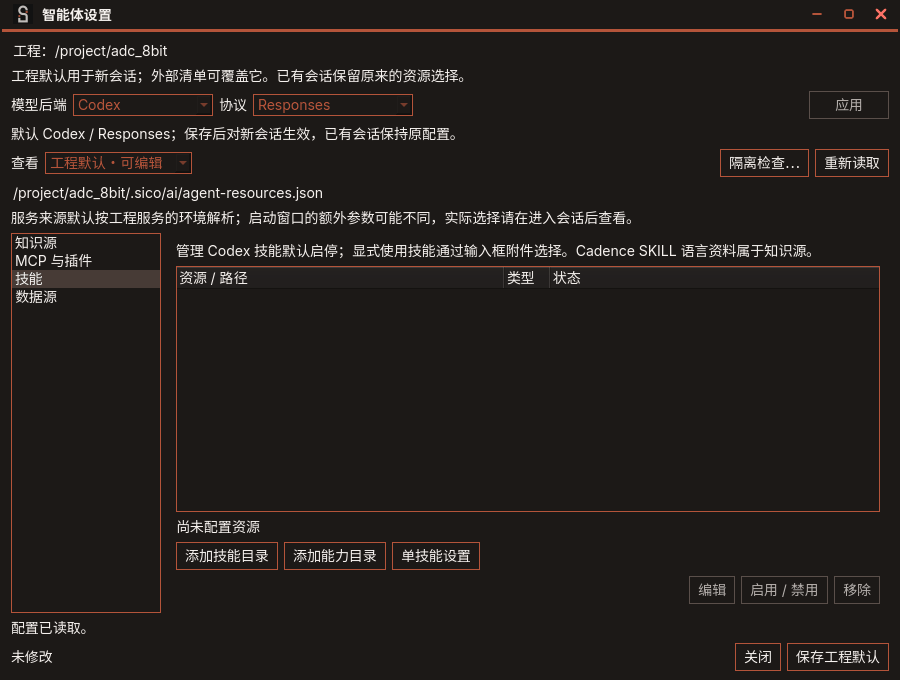

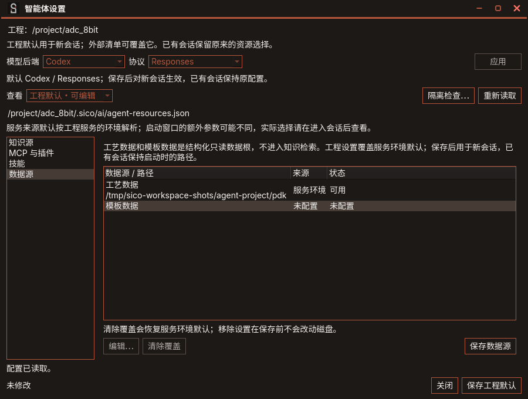
| 控件/按钮 | 详细说明 | 使用要点 |
|---|---|---|
| 查看下拉 | 工程默认（可编辑）、当前来源默认（只读）、当前会话（只读）。 | 编辑工程默认前先确认当前来源是否被外部清单覆盖。 |
| 隔离检查… | 对资源配置做隔离/可用性检查。 | 检查通过不代表任务已运行；仍需在会话中验证。 |
| 重新读取 | 重新读取服务端设置与 revision。 | 不要用重复读取替代处理冲突。 |
| 知识源页 | 添加本地资料/远程知识库，启用/禁用、编辑、移除，打开索引与搜索预览。 | PDK 器件资格和 CDF 参数规则继续以结构化接口为准。 |
| MCP 与插件页 | 添加本地插件、STDIO 或 Streamable HTTP 服务。 | 派生 MCP 由会话管理，不要在这里重复登记。 |
| 技能页 | 添加技能目录、能力目录，或配置单技能覆盖。 | 显式使用技能通过输入框附件选择。 |
| 数据源页 | 编辑工程 PDK 数据/电路模板路径和生效来源。 | 路径必须是服务端可解析的绝对位置；保存前检查来源。 |
| 查看配置差异 | 比较草稿与最新默认或会话生效配置。 | 有差异时先决定采用最新默认还是保留草稿。 |
| 采用最新默认 / 核对后保留草稿 | 解决重新读取与未保存草稿的冲突。 | 保留草稿后仍需重新核对保存结果。 |
| 保存工程默认 / 关闭 | 保存当前可编辑页面，或关闭对话框。 | 关闭不保存未提交草稿；已提交保存必须重新读取核对。 |
主界面按钮与菜单总表
| 区域 | 按钮/菜单 | 作用 |
|---|---|---|
| 标题栏 | 最小化 / 最大化 / 关闭 | 关闭默认挂起窗口；是否结束服务由关闭对话框决定。 |
| 菜单栏 | 会话 | 返回当前会话、会话历史与操作、执行待办、关闭 SiCo。 |
| 菜单栏 | 视图 | 恢复默认布局。 |
| 菜单栏 | 工作区 | 打开预览产物、会话历史与操作。 |
| 菜单栏 | 设置 | 外观设置、智能体设置、Codex 特性、工程记忆。 |
| 菜单栏 | 工具 | 终端。 |
| 菜单栏 | 帮助 | 用户手册、版本信息。 |
| 菜单栏 | 通信 / 服务 | 连接/启动/断开 CDNS-IC，查看连接信息；重试或停止项目服务。 |
| 输入区 | 附件 | 添加图片、音频、技能或文件引用。 |
| 输入区 | 执行权限 | 选择 Codex 本地操作范围。 |
| 输入区 | 模型 / 推理强度 | 覆盖本回合模型和推理强度；“模型默认”不覆盖。 |
| 输入区 | 上下文用量 | 显示当前任务上下文消耗；不是模型费用。 |
| 输入区 | 持续目标 | 为会话设置跨回合目标。 |
| 输入区 | 回合设置 | 修改模型、权限、推理和附件选项。 |
| 输入区 | 发送 | 发送任务；Enter 发送，Shift+Enter 换行。 |
| 输入区 | 停止 | 停止当前任务并暂停待办队列；未提交草稿保留。 |
| 输入区 | 执行待办任务 | 队列暂停/中断后恢复执行。 |
| 输入区 | 结束中断任务 | 结束中断任务，不重放已发出的写入。 |
| 输入区 | 回到最新 | 历史浏览后回到会话最新位置。 |
截图说明。本页截图使用演示工程、示例会话和临时 Virtuoso 连接生成，用于展示界面结构与按钮位置；实际队列、主机、模型和路径以当前工程为准。